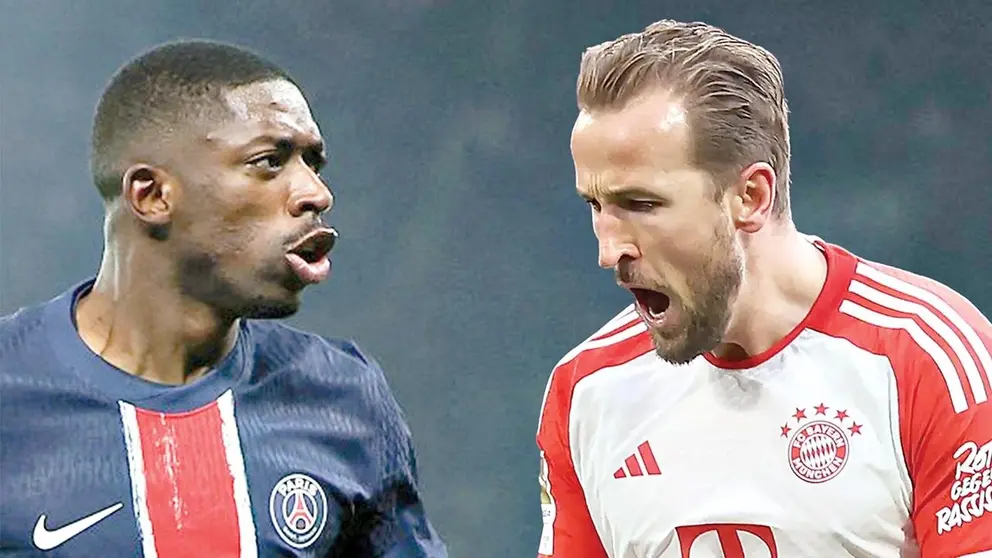

PSG y Bayern, reencuentro de gigantes en cuartos de final
El Mundial de Clubes FIFA 2025™ vivirá un duelo electrizante cuando París Saint-Germain y Bayern Múnich se enfrenten en los cuartos de final. Este choque revive una de las rivalidades más intensas del fútbol europeo moderno y promete ser uno de los partidos más esperados del certamen.
La historia reciente entre ambos equipos tiene un episodio imborrable: la final de la UEFA Champions League 2020 en Lisboa, donde Bayern se impuso por 1-0 gracias a un cabezazo de Kingsley Coman, exjugador del PSG. Aquella noche significó un duro golpe para los parisinos, que tardaron cinco años en volver a disputar una final continental.
Sin embargo, el PSG llega fortalecido. El mes pasado, aplastó al Inter de Milán con un contundente 5-0 en la final de la Supercopa de Europa. Y en los octavos de final del Mundial de Clubes, venció 4-0 al Inter Miami CF, mostrando su poderío ofensivo y buen juego colectivo. La posible inclusión de Ousmane Dembélé desde el arranque añade aún más peligro a la ofensiva liderada por Kylian Mbappé.
Bayern Múnich, por su parte, también llega con confianza tras vencer al Flamengo en su debut. Aunque no podrá contar con Leroy Sané (tras su traspaso al Galatasaray), el equipo bávaro recupera piezas clave: Jamal Musiala ya sumó minutos tras una lesión, y Coman podría estar disponible si supera molestias físicas.
Dos estilos, dos filosofías, dos plantillas repletas de talento... y un solo boleto a semifinales. El mundo del fútbol estará atento a esta nueva batalla entre PSG y Bayern, una rivalidad que trasciende el continente europeo.